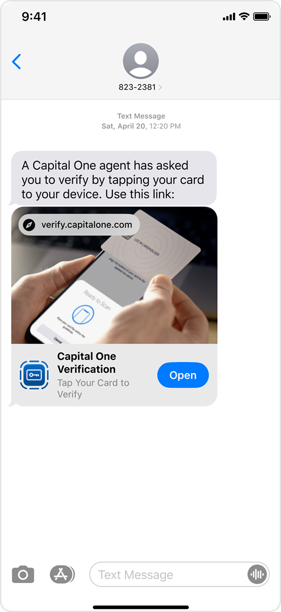
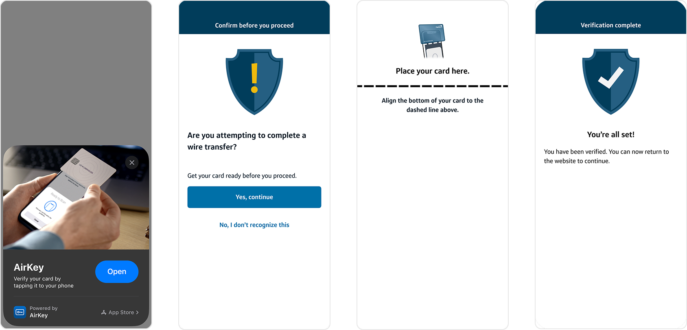
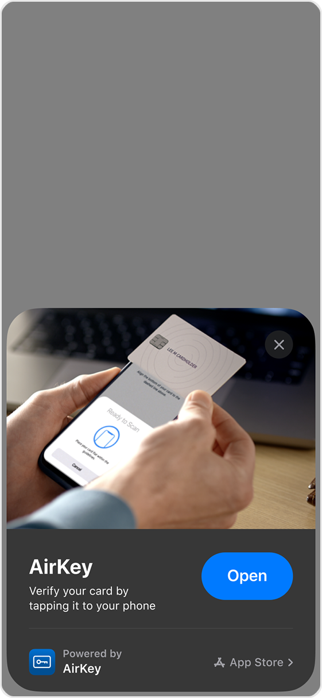
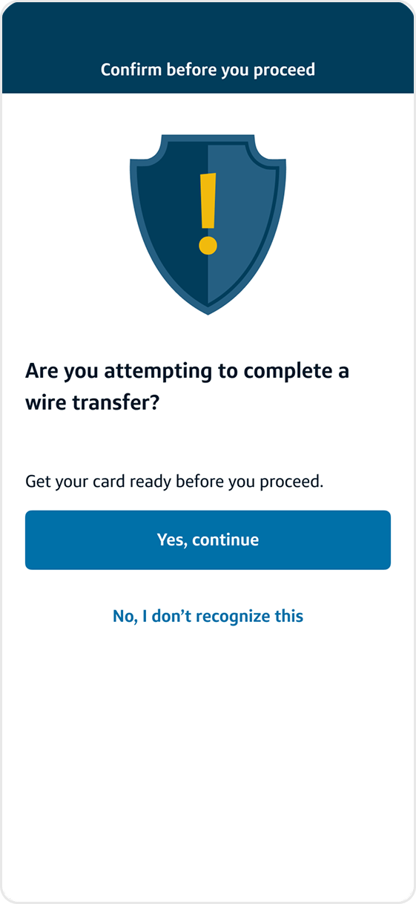
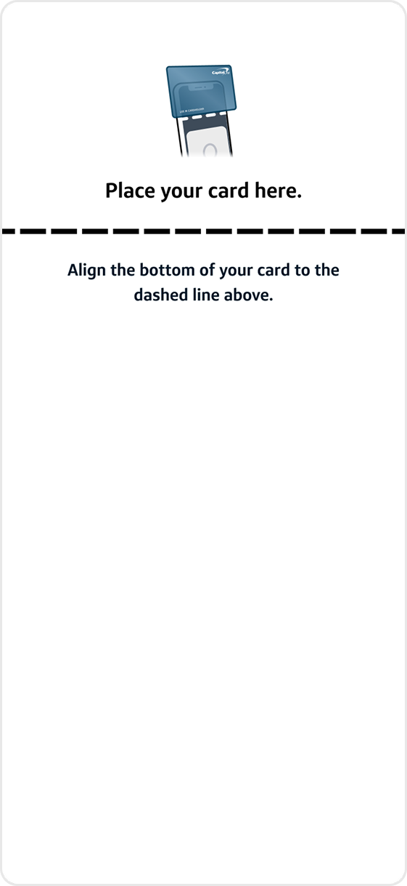

Channel-agnostic research
Understanding how customers think about identity verification across web, mobile, and emerging channels — and where expectations break.
How I transformed a mobile-only authentication method into a reusable, cross-channel trust system.
Established shared patterns that eliminated redundant design and engineering effort across channel teams.
Shifted the org's understanding of friction — from obstacle to purposeful reassurance in identity flows.
Aligned cross-functional stakeholders on shared trust principles and friction language.
Enabled faster integration of new channels using shared experience models and standardized patterns.
AirKey (formerly Presto) allows customers to verify identity by tapping their card to their device. It was proven on mobile and trusted by customers — but constrained to a single channel.
Meanwhile, authentication volume outside mobile was growing. Fraud risk models were evolving. Channel teams were duplicating verification patterns independently. And user experiences varied across touchpoints.
The system worked — but it didn't scale.
Every new channel integration required redefining risk posture, rebuilding UX patterns, revalidating mental models, and re-aligning engineering standards. This created compounding fragmentation:
The real challenge wasn't "make it work on web." It was:
How might we design a reusable verification framework that scales across channels without eroding user trust?
If we failed, channel teams would continue duplicating authentication logic. Customers would experience inconsistent friction across touchpoints. Security-driven interruptions would feel arbitrary. And trust erosion would compound over time.
In high-risk identity flows, inconsistency is more damaging than friction.
We weren't redesigning UI. We were operationalizing trust across an ecosystem.
I owned the cross-channel expansion strategy across four tracks. My mandate was not just to design a flow — but to define a scalable experience standard.
Understanding how customers think about identity verification across web, mobile, and emerging channels — and where expectations break.
Defining reusable, modular verification flows that adapt to each channel's constraints without sacrificing trust or consistency.
Bridging security, product, and engineering to define shared standards for risk, friction, and user guidance across channels.
Running studies to validate that channel-switching met user mental models and that intentional friction felt purposeful, not punitive.
Instead of jumping into interface design, I reframed the problem.
Before scaling friction, we needed to validate whether channel switching would break flow, reduce trust, or feel purposeful. We designed research to test mental models before scaling the system.
Focus was on higher-assurance methods and cross-channel switching behavior.
QR-based prototypes were used to simulate real transitions.
Users already associated switching devices with increased security. It did not feel novel — it felt protective.
Participants tolerated "clunky" transitions when they understood why it was happening, felt prepared, and retained visibility into progress. The problem wasn't effort — it was unpredictability.
Users prioritized clear guidance, visible state progression, and confirmation moments. Flow continuity was more important than raw efficiency.
We designed a framework built around three core principles:
Users must never feel reset or lost when transitioning between channels.
Explain why verification is required — not just what to do.
Visual and interaction patterns must reinforce familiarity across every touchpoint.
The resulting experience: Desktop web generates QR → launches App Clip. Call center triggers SMS deep link. Mobile web transitions seamlessly. All paths converge into a unified verification moment.

On desktop, the user scans a QR code to launch the App Clip on their phone, bridging the channel gap seamlessly.

During a call, the agent triggers an SMS deep link. The customer opens it and verifies with their card — no app download required.




The biggest outcome was not a flow — it was a framework.
This framework reduced duplication across channel teams, standardized friction language, created shared definitions of "good friction," and enabled faster channel integration. Verification became infrastructure — not a one-off experience.
To accelerate synthesis and iteration, I incorporated AI tooling throughout the process:
AI reduced synthesis time and allowed faster iteration before moderated validation. This wasn't AI replacing research — it amplified strategic clarity.
While production metrics are confidential, the work:
More importantly: it shifted the org's framing of friction — from obstacle to intentional trust signal.
When users understand why security is happening, effort becomes reassurance. Designing scalable trust requires:
Trust does not scale accidentally. It must be architected.